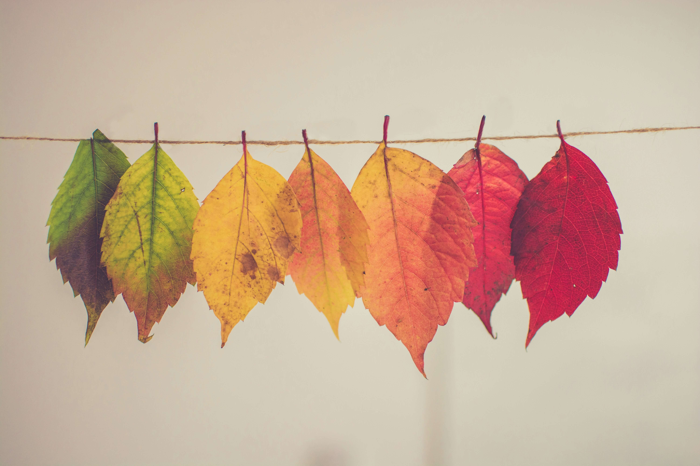
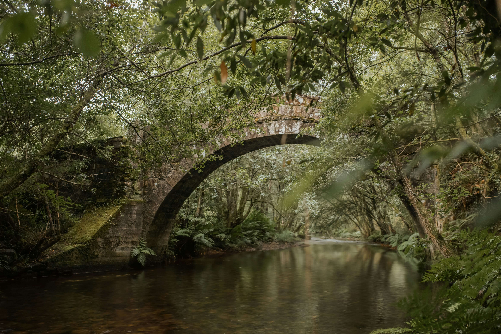
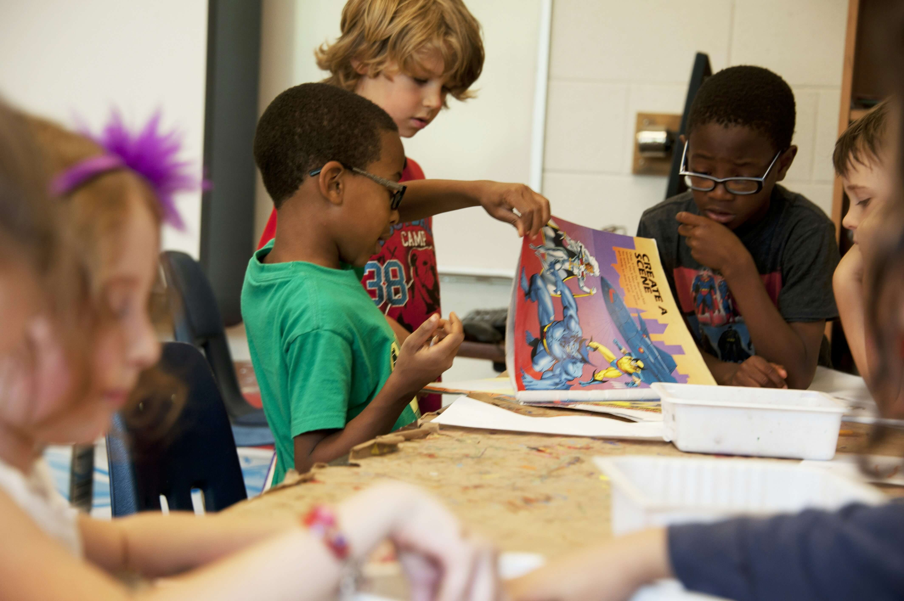

Conseguimos pasar de lo quemado
A lo recuperado
Gracias a donaciones colectivas conseguimos recuperar los bosques tras los incendios. Cuando cuidamos los bosques, protegemos la biodiversidad y el futuro de la terriña galega.
Después de los recientes incendios en la región, es primordial restaurar los bosques dañados y promover un desarrollo sostenible.
Conseguimos pasar de lo quemado
A lo recuperado
Año tras año veíamos como los bosques autóctonos de Galicia disminuían a causa de desastres naturales. En concreto, cada verano miles de hectáreas se queman.
Muchos de estos incendios son evitables mediante concenciación y protección del espacio natural, pero ¿Qué hacemos cuando se incendia el bosque?
Cuando un monte se quema, es fundamental recuperar el ecosistema con especies locales en cuanto las condiciones lo permitan, y a veces las administraciones tardan demasiado en actual. Para solucionar este problema nació esta iniciativa
Si el bosque se quema, nosotros lo recuperamos
Nuestro equipo cuenta con expertos en reforestación, voluntarios locales y asociaciones comprometidas con el medio ambiente.
Todas nuestras acciones dependen de las donaciones ciudadanas. Para poder recuperar el verde del bosque gallego necesitamos tu ayuda.
Quiero ayudarTras los incendios en esta zona protegida, estamos plantando especies autóctonas como robles y castaños para recuperar su biodiversidad.
 Más sobre este proyectoImpartimos talleres en colegios gallegos para concienciar a los jóvenes sobre la importancia de cuidar los bosques.
 Ver más detallesCon tu ayuda podemos recuperar el olor a madera mojada, el verde de pino y conseguir frenar la expansión del eucalipto en montes gallegos. ¡Tu contribución es esencial!
Email: info@reforestaciongalicia.com
Teléfono: +34 987 654 321
Dirección: Rúa Los Grelos Son Verdes 45, Santiago de Compostela, Galicia, España
Ver mapa